"And with thee will I break in pieces the horse and his rider;
and with thee will I break in pieces the chariot and his rider;"
Jeremiah 51:21
¶ If you ignore the Brakes on your modern day horse, the motorcycle, you and it really will be broken in pieces. That includes all you sidecar (Chariot) people too.
Hydraulic disc brakes are quite common now. Before Honda came out with the CB750 in 1969 you didn't see them much, now they are everywhere, even on clutches. They work very good and are quite reliable, but are often neglected. No one thinks about them until they don't work, then they think about them a lot! Usually you go out to ride in the spring, pull the lever to stop and the brakes don't work, lock up, drag, or feel spongy. Other times the brakes worked OK, then you put a new set of pads on and the pistons won't go back in the caliper. Then again sometimes they do, but then drag when the new brakes are applied. The cause is poor or no maintenance. Brake fluid loves water and when water gets in so does gook and rust. The cure can be somewhat easy or an all day affair.
Let us not get ahead of our selves. Our first problem with Hydraulic Brakes will probably be worn out pads. Worn brake pads are easy to fix. Just remove the two caliper mounting bolts and pull the caliper off the rotor. It will still be connected to the brake hose. Do not take the brake hose off or loosen the bolt where it connect to the caliper unless you have to because you will loose your prime. Hook a short piece of wire onto the caliper and hang the caliper from somewhere on the front forks. It is a bad idea to let the caliper hang on the brake hose. Pad the caliper with a shop rag. Take a large C-clamp and use it to slowly push the caliper piston(s) back into the caliper. You must do this. If you do not compress the caliper pistons the new, thicker, brake pads will not fit back on the rotor.
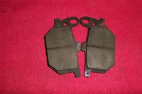 Disk Brake Pads |
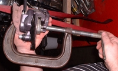 Push Pads back into Caliper |
Now unhook the old pads from the caliper and install the new ones. Notice that the two pads may have worn different amounts. When you periodically check pads for wear while on the bike it may be hard to see both pads. Make sure you check Both pads for wear. There may be pins that hold the pads to the calipers. These pins may be screwed into the calipers or have small clips that hold them in. Sometimes, there are grooves in the calipers that hold the pads in or the entire pad may be set into the caliper.
Usually there is also a flat looking anti-rattle spring that presses against the edge of the pads to help keep the pads in position once the calipers are installed on the rotor. There are lots of different ways manufacturers keep their pads in position. Check your shop manual to get the exact procedure although once you get into them it should be obvious. The shop manual will also give you the torque for the two mounting bolts. Always torque the caliper mounting bolts to the right torque and use a good quality thread locker too.
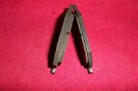 Pads Worn at Different Rates |
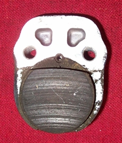 Round Pads set into the Caliper |
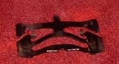 Anti-Rattle Spring |
As you can see on the examples below, water contamination can really gum things up. The Master Cylinder Plunger is totally gooked up and inoperative. The Single Caliper Piston was sticking because of all the gook. This is why motorcycle manufacturers want you to change your brake fluid on a regular basis. The water and contaminants get thrown out with the old fluid. If your brakes start to heat up, even though you have not touched the brake lever. If you put on the brakes and they lock up or drag. If these things happen, you have corrosion and gook behind your caliper piston.
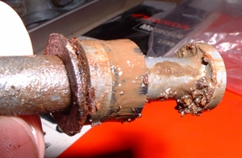 Dirty Master Cylinder Plunger. |
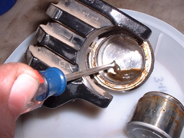 Dirty Caliper & Piston. |
Put the bike on its center stand and remove the brake caliper from the disk. Usually two bolts hold it in position on the front wheel and the rear wheel. A lot of times it is easier, on the Rear Wheel, to take the axle out and pull out the whole mounting bracket.
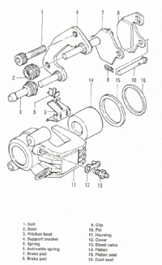 Front Single Caliper. |
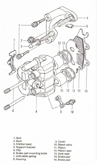 Front Duel Caliper. |
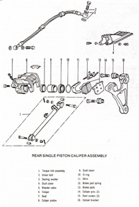 Rear Caliper Assembly. |
Position the handlebars so the master cylinder is level and take a large, wet, towel and put it over the gas tank and any painted surface. Brake fluid will ruin a painted surface. Don't worry about getting brake fluid on your fingers. It has never hurt me so I guess it will not hurt you. If you are worried about it, that is OK, use plastic gloves. Take off brake fluid reservoir cover and make sure it is filled with fluid. After removing the brake pads, pump the brake lever once while watching the caliper piston. You will see the piston move out just a bit. Put a bowl under the caliper and keep pumping until the piston pops out. Keep an eye on the reservoir and add brake fluid as needed. If there is more than one piston, let one move out a bit then put a C-clamp on it to keep it from moving out any further and keep pumping... the other piston will now move out. Alternate the C-clamp between the pistons, loosening the C-clamp a turn or two each time, so the pistons move out of the caliper together equally, until they can be removed. Be sure to pad the caliper with a shop rag so you do not damage the paint.
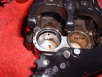 Two Piston Caliper |
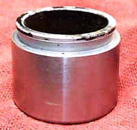 Caliper Piston |
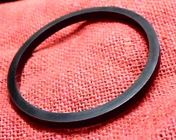 Caliper O-Ring |
When the piston(s) pops out, look inside the caliper and you will see the round, square sectioned O-ring. Remove it from its groove and clean everything in clean brake fluid. I only use brake fluid. I do not use solvents or cleaners of any kind. If you use solvents you must make sure you get any residue cleaned out. If you don't, it could contaminate the new brake fluid and ruin the O-ring. Remember, it's your life at stake here. Supposedly you can use Isopropyl alcohol or ethyl alcohol probably because they evaporate quickly. All in all I will stick to brake fluid for cleaning. Here is one little trick you might find useful if you find a lot of gook, behind the piston, in the caliper. After removing all the parts from the caliper, gently play the flame from a propane torch on the inside of the caliper. All the corrosion will turn to a powder and be easily scraped out. Don't heat it too hot. Just hot enough to powder the gook.
To disassemble the Master Cylinder take off the break lever and the little rubber Dust Boot. Then pull the Circlip on the Plunger Shaft. Remove the plunger shaft and look at all parts. If they are dirty, clean or replace them. Remember there are different internal designs but they are all different ways of doing the same thing... applying hydraulic pressure to the back side of the caliper pistons. Be very careful if you use the Propane Torch Gook Cure. Sometimes, with older machines, the Master Cylinder reservoir is made out of plastic, which can melt or distort when heated. While technically these reservoirs can be removed, in practice it can be almost impossible to do so without damaging the reservoir. If there is damage or pits in the body of the Master Cylinder you might be able to hone the bore with a ball hone but be careful. Don't do it very much. It may be a better idea to replace the Master Cylinder. It is a judgment call you will have to make.
Assembly of the Master Cylinder is just the reverse of disassembly. Remember to lube everything with Brake Fluid of the proper type. Remember Brake Fluid will damage paint so don't let any drip onto your paint job. I like to cover everything that could be dripped on with a wet towel.
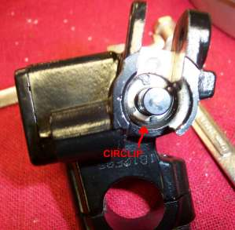 Master Brake Cylinder Circlip |
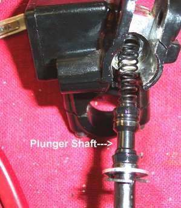 Master Brake Plunger Shaft |
If possible use new parts and/or rebuild kits. On older bikes parts may be hard to get. You may have to clean and reuse old parts. I have found the Square rubber O-rings usually clean up pretty good. If in doubt, replace it. If the Caliper Piston has ANY marks, scratches or pits in it, GET A NEW ONE.
Reassemble the caliper using only brake fluid, of the proper type, for lubrication. The pistons should push in with thumb pressure. Do not force them. I usually pre fit the pistons in their bores to make sure they move smoothly. Then I remove them, lube with brake fluid and fit the o-ring, and then fit the pistons for real. Use your shop manual to aid in assembly... You do have one, don't you?
With the entire system drained of old brake fluid, bolt everything back together.
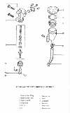
Now comes the fun part.
- Put a clear hose, of the right size, on the Caliper Bleed Nipple and put the end in a jar.
- To just replace the Brake Fluid, open the bleeder nipple on the Brake Caliper and pump the lever or peddle till all the old fluid is pumped out and the new fluid starts to come out. Keep checking the Master Cylinder fluid reservoir and add fluid as it goes down.
- To fill the brake lines and caliper with brake fluid open the caliper brake bleed nipple and squeeze the brake lever (Brake Peddle) and hold it. Now close the bleeder nipple and release the lever (Brake Peddle). Keep doing this until you feel the lines are full.
- To bleed the brakes pump the brake handle or pedal several times and then hold it on. Open the bleed screw, on the caliper, and brake fluid mixed with air will come out. Close the screw, pump it up again and repeat the process. Keep it up until you have a firm feel to the lever and no air in the brake fluid coming out. Top off the master brake cylinder.
- Lastly, hose everything off with water to remove any trace of brake fluid.
Sounds so easy... Yes? It can be, if all the parts are new. Unfortunately, by the time I see these things they are pretty far gone. If you were to replace everything... caliper(s), master cylinder, hoses...you could easily lay out $500 or more. Because of this we end up using a lot of old parts, which is OK if we keep it within reason.
So, you pump and you pump... nothing. Now what?
- Try bleeding the air from every fitting
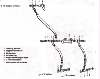
on the hose, such as where the hose attaches to the master cyl. and anywhere else that there is a fitting. - Try filling the system from the bleeder screw with an air pump and bleeder jar.
- Tap the fittings lightly with a hammer to jar the air bubbles loose.
- Let things set overnight, then do everything over again.
- Be patient, keep bleeding the system... this may take quite a while.
- On at least one China clone bike I had to take the master and slave cylinders off the bike and turn them every which way while pumping the master. I left the caliper loose on the rotor so the piston didn't pop out. It took forever but it finally pumped up.
- The last brake job I worked on was somewhat interesting to say the least. Long story short. Bike crashed and landed on front master cylinder and lever. Lever unjammed. Brake would pump up, push bike three or four feet and it would loose prime and it was pure H**L to get it pumped up again. After lots of bleeding (Brake Fluid, not blood) I could get it back and it would hold prime as long as the wheel did not turn. Turn the wheel and bang, prime was gone. After much hair pulling and cursing I found that the rotor was just slightly bent. You would think that if a wobbly rotor were pushing the brake pistons, it was a two piston caliper, back too far a simple extra squeeze would make the brake work but no... the whole thing failed and would not come back. New rotor and problem solved. Somehow two good caliper pistons plus a very slightly bent rotor was screwing things up... I think... maybe. Go figure.
Even after lots of effort, the brakes can feel spongy. This can be from old brake lines which are expanding just a bit. The cure is new lines.
If you find your brake pads are contaminated with oil there are break cleaners you can spray on them that will clean out all the oil. Just be careful not to get these cleaners on to any rubber parts of the brake system.
While gathering the exploded views for page two I ran across a great explanation of how Hydraulic brakes work in a Factory Kawasaki KZ550 manual. Excellent information. You can read it Here
The Hydraulic Clutch is handled in the same way as Hydraulic Brakes.
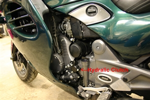 Hydraulic Slave Clutch. |
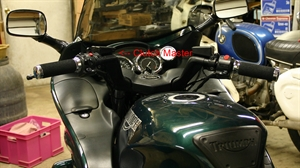 Hydraulic Clutch Master |
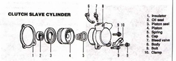 Hydraulic Slave Clutch. |
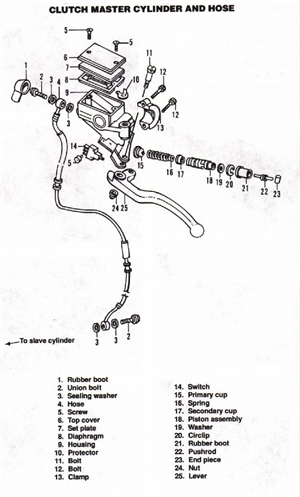 Clutch Master Assembly. |
If thee does not want thy trusty steed and thee to be broken in pieces, thee will maintain thy Hydraulic Brakes in a proper manner. That goes for sidecars too.

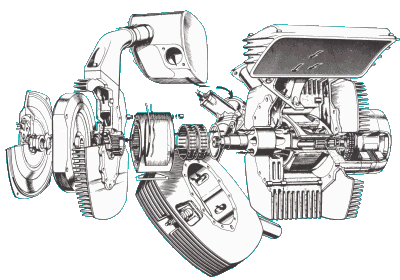 |
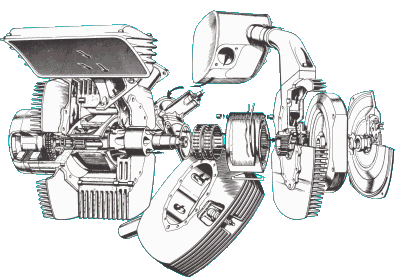 |
Copyright © 1999-2014 dansmc.com. All rights reserved.